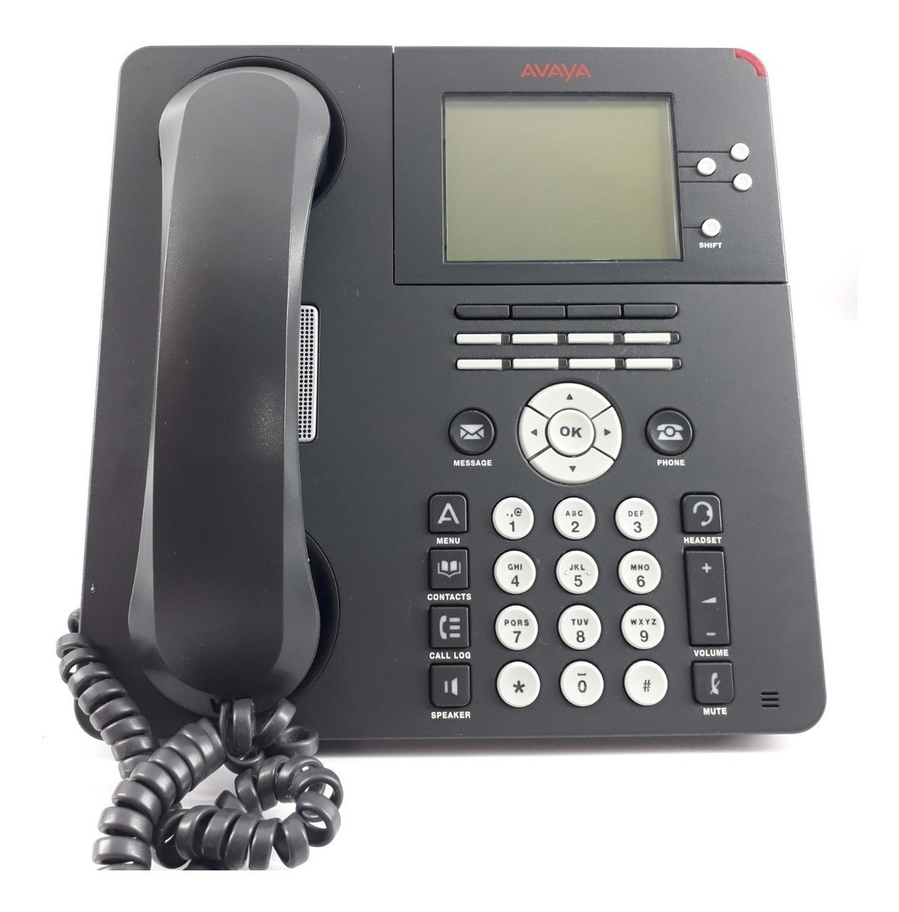

Tarptautiniai šalių skambinimo kodai. Kaip skambinti į užsienį.
 Lietuvos miestų kodai | Tarptautiniai kodai | Operatorių kodai
Tarptautiniai šalių skambinimo sujungimo kodai
Šalis Kodas Kodas (tarptautinis) Kaip skambinti? JAV +1 001 Kaip skambinti į JAV Kanada +1 001 Kaip skambinti į Kanada Kazachstanas (Kazachija) +7 007 Kaip skambinti į Kazachstanas (Kazachija) Rusija +7 007 Kaip skambinti į Rusija Egiptas +20 0020 Kaip skambinti į Egiptas Pietų Afrikos Respublika +27 0027 Kaip skambinti į Pietų Afrikos Respublika Graikija +30 0030 Kaip skambinti į Graikija Olandija +31 0031 Kaip skambinti į Olandija Belgija +32 0032 Kaip skambinti į Belgija Prancūzija +33 0033 Kaip skambinti į Prancūzija Ispanija +34 0034 Kaip skambinti į Ispanija Vengrija +36 0036 Kaip skambinti į Vengrija Italija +39 0039 Kaip skambinti į Italija Vatikanas +39 0039 Kaip skambinti į Vatikanas Rumunija +40 0040 Kaip skambinti į Rumunija Šveicarija +41 0041 Kaip skambinti į Šveicarija Austrija +43 0043 Kaip skambinti į Austrija Didžioji Britanija ( Anglija ) +44 0044 Kaip skambinti į Didžioji Britanija ( Anglija ) Danija +45 0045 Kaip skambinti į Danija Švedija +46 0046 Kaip skambinti į Švedija Norvegija +47 0047 Kaip skambinti į Norvegija Lenkija +48 0048 Kaip skambinti į Lenkija Vokietija +49 0049 Kaip skambinti į Vokietija Peru +51 0051 Kaip skambinti į Peru Meksika +52 0052 Kaip skambinti į Meksika Kuba +53 0053 Kaip skambinti į Kuba Argentina +54 0054 Kaip skambinti į Argentina Brazilija +55 0055 Kaip skambinti į Brazilija Čilė +56 0056 Kaip skambinti į Čilė Kolumbija +57 0057 Kaip skambinti į Kolumbija Venesuela +58 0058 Kaip skambinti į Venesuela Malaizija +60 0060 Kaip skambinti į Malaizija Australija +61 0061 Kaip skambinti į Australija Indonezija +62 0062 Kaip skambinti į Indonezija Filipinai +63 0063 Kaip skambinti į Filipinai Naujoji Zelandija +64 0064 Kaip skambinti į Naujoji Zelandija Singapūras +65 0065 Kaip skambinti į Singapūras Tailandas +66 0066 Kaip skambinti į Tailandas Japonija +81 0081 Kaip skambinti į Japonija Pietų Korėja +82 0082 Kaip skambinti į Pietų Korėja Vietnamas +84 0084 Kaip skambinti į Vietnamas Kinija +86 0086 Kaip skambinti į Kinija Turkija +90 0090 Kaip skambinti į Turkija Indija +91 0091 Kaip skambinti į Indija Pakistanas +92 0092 Kaip skambinti į Pakistanas Afganistanas +93 0093 Kaip skambinti į Afganistanas Šri Lanka +94 0094 Kaip skambinti į Šri Lanka Mianmaras +95 0095 Kaip skambinti į Mianmaras Iranas +98 0098 Kaip skambinti į Iranas Marokas +212 00212 Kaip skambinti į Marokas Alžyras +213 00213 Kaip skambinti į Alžyras Tunisas +216 00216 Kaip skambinti į Tunisas Libija +218 00218 Kaip skambinti į Libija Gambija +220 00220 Kaip skambinti į Gambija Senegalas +221 00221 Kaip skambinti į Senegalas Mauritanija +222 00222 Kaip skambinti į Mauritanija Malis +223 00223 Kaip skambinti į Malis Gvinėja +224 00224 Kaip skambinti į Gvinėja Dramblio Kaulo krantas +225 00225 Kaip skambinti į Dramblio Kaulo krantas Burkina Fasas +226 00226 Kaip skambinti į Burkina Fasas Nigeris +227 00227 Kaip skambinti į Nigeris Togas +228 00228 Kaip skambinti į Togas Beninas +229 00229 Kaip skambinti į Beninas Mauricijus +230 00230 Kaip skambinti į Mauricijus Liberija +231 00231 Kaip skambinti į Liberija Siera Leonė +232 00232 Kaip skambinti į Siera Leonė Gana +233 00233 Kaip skambinti į Gana Nigerija +234 00234 Kaip skambinti į Nigerija Čadas +235 00235 Kaip skambinti į Čadas Centrinės Afrikos respublika +236 00236 Kaip skambinti į Centrinės Afrikos respublika Kamerūnas +237 00237 Kaip skambinti į Kamerūnas Kabo Verdė +238 00238 Kaip skambinti į Kabo Verdė San Tome ir Prinsipe +239 00239 Kaip skambinti į San Tome ir Prinsipe Pusiaujo Gvinėja +240 00240 Kaip skambinti į Pusiaujo Gvinėja Gabonas +241 00241 Kaip skambinti į Gabonas Kongas +242 00242 Kaip skambinti į Kongas Kongo Demokratinė respublika (Zairas) +243 00243 Kaip skambinti į Kongo Demokratinė respublika (Zairas) Angola +244 00244 Kaip skambinti į Angola Bisau Gvinėja +245 00245 Kaip skambinti į Bisau Gvinėja Diego Garcia +246 00246 Kaip skambinti į Diego Garcia Dangun Žengimo sala +247 00247 Kaip skambinti į Dangun Žengimo sala Seišelai +248 00248 Kaip skambinti į Seišelai Sudanas +249 00249 Kaip skambinti į Sudanas Ruanda +250 00250 Kaip skambinti į Ruanda Etiopija +251 00251 Kaip skambinti į Etiopija Somalis +252 00252 Kaip skambinti į Somalis Džibutis +253 00253 Kaip skambinti į Džibutis Kenija +254 00254 Kaip skambinti į Kenija Tanzanija +255 00255 Kaip skambinti į Tanzanija Uganda +256 00256 Kaip skambinti į Uganda Burundis +257 00257 Kaip skambinti į Burundis Mozambikas +258 00258 Kaip skambinti į Mozambikas Zambija +260 00260 Kaip skambinti į Zambija Madagaskaras +261 00261 Kaip skambinti į Madagaskaras Reunionas +262 00262 Kaip skambinti į Reunionas Zimbabvė +263 00263 Kaip skambinti į Zimbabvė Namibija +264 00264 Kaip skambinti į Namibija Malavis +265 00265 Kaip skambinti į Malavis Lesotas +266 00266 Kaip skambinti į Lesotas Bostvana +267 00267 Kaip skambinti į Bostvana Svazilandas +268 00268 Kaip skambinti į Svazilandas Komorai +269 00269 Kaip skambinti į Komorai Mayotte +269 00269 Kaip skambinti į Mayotte Šv. Elenos sala +290 00290 Kaip skambinti į Šv. Elenos sala Eritrėja +291 00291 Kaip skambinti į Eritrėja Aruba +297 00297 Kaip skambinti į Aruba Farerų salos +298 00298 Kaip skambinti į Farerų salos Gibraltaras +350 00350 Kaip skambinti į Gibraltaras Portugalija +351 00351 Kaip skambinti į Portugalija Liuksemburgas +352 00352 Kaip skambinti į Liuksemburgas Airija +353 00353 Kaip skambinti į Airija Islandija +354 00354 Kaip skambinti į Islandija Albanija +355 00355 Kaip skambinti į Albanija Malta +356 00356 Kaip skambinti į Malta Kipras +357 00357 Kaip skambinti į Kipras Suomija +358 00358 Kaip skambinti į Suomija Bulgarija +359 00359 Kaip skambinti į Bulgarija Latvija +371 00371 Kaip skambinti į Latvija Estija +372 00372 Kaip skambinti į Estija Moldova +373 00373 Kaip skambinti į Moldova Armėnija +374 00374 Kaip skambinti į Armėnija Baltarusija +375 00375 Kaip skambinti į Baltarusija Andora +376 00376 Kaip skambinti į Andora Monakas +377 00377 Kaip skambinti į Monakas San Marinas +378 00378 Kaip skambinti į San Marinas Ukraina +380 00380 Kaip skambinti į Ukraina Serbija ir Juodkalnija +381 00381 Kaip skambinti į Serbija ir Juodkalnija Kroatija +385 00385 Kaip skambinti į Kroatija Slovėnija +386 00386 Kaip skambinti į Slovėnija Bosnija ir Hercegovina +387 00387 Kaip skambinti į Bosnija ir Hercegovina Makedonija +389 00389 Kaip skambinti į Makedonija Čekija +420 00420 Kaip skambinti į Čekija Slovakija +421 00421 Kaip skambinti į Slovakija Lichtenšteinas +423 00423 Kaip skambinti į Lichtenšteinas Folklando salos +500 00500 Kaip skambinti į Folklando salos Belizas +501 00501 Kaip skambinti į Belizas Salvadoras +503 00503 Kaip skambinti į Salvadoras Hondūras +504 00504 Kaip skambinti į Hondūras Nikaragva +505 00505 Kaip skambinti į Nikaragva Kosta Rika +506 00506 Kaip skambinti į Kosta Rika Panama +507 00507 Kaip skambinti į Panama Sen Pjeras ir Mikelonas +508 00508 Kaip skambinti į Sen Pjeras ir Mikelonas Haitis +509 00509 Kaip skambinti į Haitis Gvadelupa +590 00590 Kaip skambinti į Gvadelupa Bolivija +591 00591 Kaip skambinti į Bolivija Gajana +592 00592 Kaip skambinti į Gajana Ekvadoras +593 00593 Kaip skambinti į Ekvadoras Prancūzijos Gviana +594 00594 Kaip skambinti į Prancūzijos Gviana Paragvajus +595 00595 Kaip skambinti į Paragvajus Martinika +596 00596 Kaip skambinti į Martinika Surinamas +597 00597 Kaip skambinti į Surinamas Urugvajus +598 00598 Kaip skambinti į Urugvajus Olandų Antilai +599 00599 Kaip skambinti į Olandų Antilai Rytų Timoras +670 00670 Kaip skambinti į Rytų Timoras Norfolko sala +672 00672 Kaip skambinti į Norfolko sala Brunėjus +673 00673 Kaip skambinti į Brunėjus Nauru +674 00674 Kaip skambinti į Nauru Papua ir Naujoji Gvinėja +675 00675 Kaip skambinti į Papua ir Naujoji Gvinėja Tonga +676 00676 Kaip skambinti į Tonga Saliamono salos +677 00677 Kaip skambinti į Saliamono salos Vanuatu +678 00678 Kaip skambinti į Vanuatu Fidžis +679 00679 Kaip skambinti į Fidžis Palau +680 00680 Kaip skambinti į Palau Kuko salos +682 00682 Kaip skambinti į Kuko salos Niue sala +683 00683 Kaip skambinti į Niue sala Amerikos Samoa +684 00684 Kaip skambinti į Amerikos Samoa Samoa +685 00685 Kaip skambinti į Samoa Kiribatis +686 00686 Kaip skambinti į Kiribatis Naujoji Kaledonija +687 00687 Kaip skambinti į Naujoji Kaledonija Tuvalu +688 00688 Kaip skambinti į Tuvalu Prancūzijos Polinezija +689 00689 Kaip skambinti į Prancūzijos Polinezija Tokelau +690 00690 Kaip skambinti į Tokelau Mikronezija +691 00691 Kaip skambinti į Mikronezija Maršalo salos +692 00692 Kaip skambinti į Maršalo salos Šiaurės Korėja +850 00850 Kaip skambinti į Šiaurės Korėja Honkongas +852 00852 Kaip skambinti į Honkongas Macao +853 00853 Kaip skambinti į Macao Kambodža +855 00855 Kaip skambinti į Kambodža Laosas +856 00856 Kaip skambinti į Laosas Inmarsat SNAC +870 00870 Kaip skambinti į Inmarsat SNAC Inmarsat Atlanto vandenynas - Rytai +871 00871 Kaip skambinti į Inmarsat Atlanto vandenynas - Rytai Inmarsat Ramusis vandenynas +872 00872 Kaip skambinti į Inmarsat Ramusis vandenynas Inmarsat Indijos vandenynas +873 00873 Kaip skambinti į Inmarsat Indijos vandenynas Inmarsat Atlanto vandenynas - Vakarai +874 00874 Kaip skambinti į Inmarsat Atlanto vandenynas - Vakarai Bangladešas +880 00880 Kaip skambinti į Bangladešas Taivanas +886 00886 Kaip skambinti į Taivanas Maldyvai +960 00960 Kaip skambinti į Maldyvai Libanas +961 00961 Kaip skambinti į Libanas Jordanija +962 00962 Kaip skambinti į Jordanija Sirija +963 00963 Kaip skambinti į Sirija Irakas +964 00964 Kaip skambinti į Irakas Kuveitas +965 00965 Kaip skambinti į Kuveitas Saudo Arabija +966 00966 Kaip skambinti į Saudo Arabija Jemenas +967 00967 Kaip skambinti į Jemenas Omanas +968 00968 Kaip skambinti į Omanas Jungtiniai Arabų Emyratai +971 00971 Kaip skambinti į Jungtiniai Arabų Emyratai Izraelis +972 00972 Kaip skambinti į Izraelis Bahreinas +973 00973 Kaip skambinti į Bahreinas Kataras +974 00974 Kaip skambinti į Kataras Butanas +975 00975 Kaip skambinti į Butanas Mongolija +976 00976 Kaip skambinti į Mongolija Nepalas +977 00977 Kaip skambinti į Nepalas Tadžikija +992 00992 Kaip skambinti į Tadžikija Turkmėnija +993 00993 Kaip skambinti į Turkmėnija Azerbaidžanas +994 00994 Kaip skambinti į Azerbaidžanas Gruzija +995 00995 Kaip skambinti į Gruzija Kirgizija +996 00996 Kaip skambinti į Kirgizija Uzbekija +998 00998 Kaip skambinti į Uzbekija Bahamos +1 242 001 242 Kaip skambinti į Bahamos Barbadosas +1 246 001 246 Kaip skambinti į Barbadosas Anguilla +1 264 001 264 Kaip skambinti į Anguilla Antigva ir Barbuda +1 268 001 268 Kaip skambinti į Antigva ir Barbuda Mergelių/Virginijos salos (Britų) +1 284 001 284 Kaip skambinti į Mergelių/Virginijos salos (Britų) Grenlandija +1 299 001 299 Kaip skambinti į Grenlandija Mergelių/Virginijos salos (JAV) +1 340 001 340 Kaip skambinti į Mergelių/Virginijos salos (JAV) Kaimanų salos +1 345 001 345 Kaip skambinti į Kaimanų salos Bermuda +1 441 001 441 Kaip skambinti į Bermuda Grenada +1 473 001 473 Kaip skambinti į Grenada Terkso ir Kaiko salos +1 649 001 649 Kaip skambinti į Terkso ir Kaiko salos Tukrso ir Caicoso salos +1 649 001 649 Kaip skambinti į Tukrso ir Caicoso salos Montseratas +1 664 001 664 Kaip skambinti į Montseratas Šiaurės Marianos salos +1 670 001 670 Kaip skambinti į Šiaurės Marianos salos Guamas +1 671 001 671 Kaip skambinti į Guamas Sent Lusija +1 758 001 758 Kaip skambinti į Sent Lusija Dominika +1 767 001 767 Kaip skambinti į Dominika Sent Vinsentas ir Grenadinai +1 784 001 784 Kaip skambinti į Sent Vinsentas ir Grenadinai Puerto Rikas +1 787 001 787 Kaip skambinti į Puerto Rikas Dominikos Respublika +1 809 001 809 Kaip skambinti į Dominikos Respublika Trinidadas ir Tobagas +1 868 001 868 Kaip skambinti į Trinidadas ir Tobagas Sent Kristoferis ir Nevis +1 869 001 869 Kaip skambinti į Sent Kristoferis ir Nevis Jamaika +1 876 001 876 Kaip skambinti į Jamaika
© telefonu-kodai.info 2020 Sprendimas: